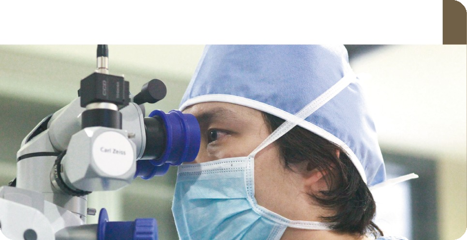

충분한 상담
불편한 증상과 생활 속 어려움부터 듣습니다. 궁금한 점을 충분히 이야기할 수 있도록 상담합니다.
JURYE ST. MARY’S EYE CLINIC
우리가 매일 지켜가는 여섯 가지 진료 기준.

눈 건강을 세심하게 살피고, 시력 회복과 지속적인 눈 건강 관리를 돕는 것. 주례성모안과가 지켜가는 진료의 방향입니다.
불편한 증상과 생활 속 어려움부터 듣습니다. 궁금한 점을 충분히 이야기할 수 있도록 상담합니다.
눈의 상태와 증상에 필요한 검사를 선택하고, 검사 결과를 함께 살펴봅니다.
눈의 상태와 생활 방식, 치료 목표를 고려해 적합한 치료 방향을 상의합니다.
검사 결과, 치료 선택지와 예상 비용, 주의사항을 이해하기 쉬운 말로 설명합니다.
진료 이후의 경과를 살피고, 필요한 정기검진과 관리 방법을 안내합니다.
분야별 진료가 필요한 경우 의료진이 함께 환자의 눈 상태를 살펴봅니다.